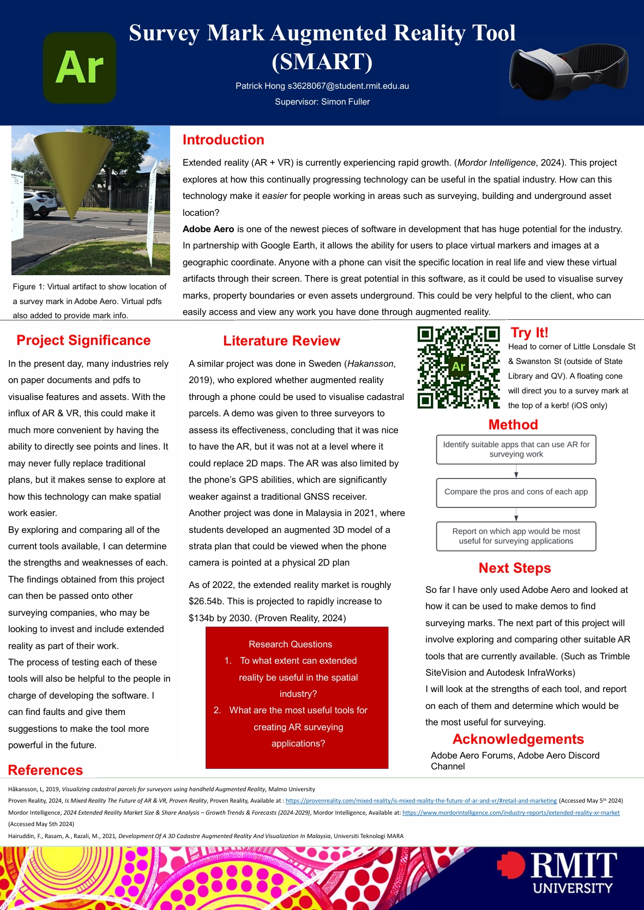
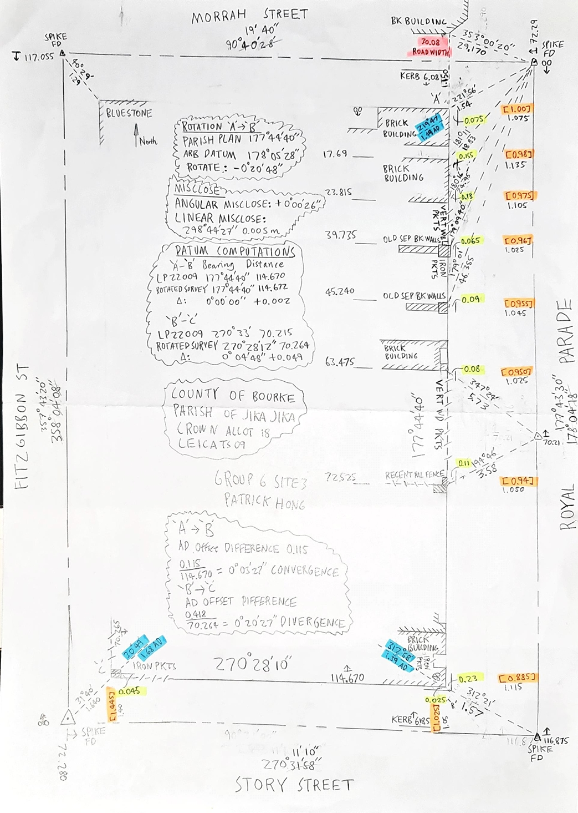

Geoportfolio
Patrick Hong
About
Hi there! Welcome to my Geoportfolio. My name is Patrick Hong. I am born and raised in Melbourne. As of August 2024 I am in my fourth and final year of the Bachelor of Surveying
degree at RMIT University. My surveying-related interests include cadastral surveying, GPS work and drafting feature surveys.
My final year major project that I am currently working on consists of looking at current AR/VR tools that are currently on the market.
How useful are these tools to the field of surveying? One test I have already conducted was through Adobe Aero.
I created a virtual marker at a specified coordinate. Then I went out and visited the same surveying mark,
to see the virtual marker could point me in the direction of the surveying mark. Amazingly, it worked well!
It was within around half a metre of the surveying mark, which was impressive given that it was running entirely off a smartphone.
My own personal hobbies include walking, eating out, cars and going to concerts!
Academic Portfolio Overview
Capstone Design
Capstone (Design) is the first half of the final year major project assessment. It focuses on designing
and proposing your very own major project. You are then paired with a supervisor, who will guide you throughout
the remainder of the year to make sure the ambitious project comes through to fruition.
- Assessment 1: Student supervisor agreement. An agreement signed by both parties
that outlines the expected duties from each other.
This includes frequency of meetings.
- Assessment 2: Poster conference presentation. Creation of a poster that showcases your major project
and it's research questions. Presented to other staff and industry professionals
- Assessment 3: Literature Review and project plan. A report of similar published literature directly relevant
to your project. Project plan sets out the expected timeline for the remainder of the year.
Below is a photo of my Capstone Design poster that was presented in May 2024:
Note: If map display is too small, right-click the image and 'Open in new tab' to allow zooming of the map.
Capstone Poster: Survey Mark Augmented Reality Tool

Cadastral Surveying Law
Cadastral Surveying Law was another course I completed.
It focuses on becoming familiar with key cadastral surveying concepts. Such as:
- Crown Boundaries
- Advanced Principles of Title Reestablishment
- Government and Freehold Roads
- Easements and Reserves
Cadastral Surveying Law also gave me the opportunity to gain more practical experience,
by doing a full surveying in the suburb of Parkville. This was then drafted
on a handwritten A3 sheet of paper. Comps were done using closure programs on the HP35s calculator.
Below is my submission for the Parkville Practical Assessment
Note: If map display is too small, right-click the image and 'Open in new tab' to allow zooming of the map.
Parkville Practical

Industry Experience
This page will briefly cover all of my work experience (as of August 2024) within the surveying industry. The two
main companies that I have worked at were Peter Richards Surveying and Northpoint Survey. This page will outline my experience
gained and skills I have learned from working at Peter Richards Surveying
Peter Richards Surveying
Survey Assistant
August 2019 - Present
For the last 5 years I have been working at Peter Richards Surveying as a Survey Assistant. Throughout my time I have been to many different sites all across
Victoria. I chose to work at Peter Richards Surveying as I had heard great things from friends who have worked there. At the time, they were also conveniently
located in Watsonia, which is just 10 minutes drive from where I live. For many of the work days, my job is to accompany the party leader on site. My role is to
operate the total station, collect feature points on the controller and carry around the equipment
I have also had the opportunity to do feature surveys on my own, with one of them being a large full surrounds survey in Doncaster East. This involved collecting
everything on our property, as well as building points on the surrounding houses. I then drafted the entire survey in AutoCAD, which became a 2D feature plan that
was sent to the client.
At Peter Richards Surveying I am also in charge of doing the majority of our GPS jobs. Many of our jobs require AHD and MGA connection. My role is to return to many
of our sites and measure relevant marks using the GPS. After doing this, I need to search and locate nearby Permanent Marks. Back in the office, I reduce and compute
the GPS data in Excel.
Northpoint Survey
Survey Assistant
January 2018 - June 2019
Northpoint Survey was my first surveying job, and I worked there for a short period after doing my work experience placement there. Whilst I was there I worked on
a 3D laser scan of the check in terminals at Melbourne Airport. This was done at night time from 10pm to 4am during the off peak times. The results were then
processed in Trimble Realworks. All 50 scans were stitched together and then used to create a feature plan of the check in terminals.
I also did drafting work for the Melbourne Airport baggage conveyor belts, where I used Bentley PowerCivil V8i to show the conveyor belts.
Skills and Proficiencies
 |
GIS |
 |
Cartographic Principles |
 |
Remote Sensing |
 |
Photogrammetry and Drone Mapping |
Credits and Attributions
The following programming languages and software were used to create the website
- HTML
- CSS
- JavaScript
- Visual Studio Basic
The deliverables contains content from the following subjects:
- Cadastral Surveying Law (GEOM2350)
- Capstone Research (Design) (GEOM2114)
Special thanks to the following people who have helped me make this website with their expertise and guidance:
As per the policy of using the Flaticons with a free account, the attributions and crediting of the creators of the icons are as below:
Attributions of icons used: